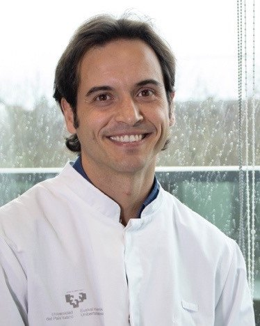

El grupo
Un grupo de investigación de la EHU que estudia el genoma humano y su microbioma, forma a profesionales y presta servicios de análisis.

Dr. Adrian Odriozola Martínez
Profesor Agregado de Genética en la Facultad de Ciencia y Tecnología de la EHU, acreditado como Profesor Pleno (Unibasq, 2025).
Doctor en Bioquímica por la EHU, con Premio Extraordinario de Doctorado. Comenzó su carrera en genética forense y de poblaciones, y desde hace más de una década investiga cómo la genética del hospedador y el microbioma intestinal se relacionan con la nutrición, la actividad física, los ritmos circadianos y el cáncer colorrectal.
Dirige el grupo Hologenomiks y la microcredencial universitaria de especialización en análisis genómico y de microbioma, y es la persona de contacto para la formación, los análisis y las colaboraciones del grupo.
- 2
- volúmenes editados en Advances in Genetics (Elsevier, 2024)
- 1
- patente europea concedida de nutrición de precisión basada en microbioma
- 4
- tesis doctorales dirigidas, y 2 en curso
- 40
- artículos en revistas con revisión por pares
Un equipo de investigación
Junto a su director, el grupo lo forman personal investigador posdoctoral, doctorandos y estudiantes de grado y de máster que realizan aquí sus trabajos de fin de estudios. En la web figura solo el investigador principal, que coordina y representa al grupo.
El trabajo combina genética, microbiología, bioinformática y fisiología del ejercicio, con laboratorio propio de secuenciación de lectura larga.
Colaboraciones
El grupo publica y desarrolla proyectos con otras universidades, centros de investigación, biobancos y empresas del ámbito de la salud, la alimentación y el deporte.
- Universidad de Cantabria
- Biobanco de la Universidad de Navarra
- Instituto de Investigación Sanitaria Biobizkaia
- Colegio Oficial de Biólogos de Euskadi (COBE)
Contacto
- Correo
- adrian.odriozola@ehu.eus
- Teléfono
- +34 946 01 26 98
- Dirección
- Grupo Hologenomiks
Departamento de Genética, Antropología Física y Fisiología Animal
Facultad de Ciencia y Tecnología, EHU
Barrio Sarriena s/n
48940 Leioa (Bizkaia)
Ver la ubicación en OpenStreetMap (se abre un sitio externo).
Atajos
- Matrícula de la microcredencial
- Prematrícula de la siguiente microcredencial
- Solicitar un análisis genético o de microbioma
- Pedir presupuesto para un proyecto
Las muestras de microbiota solo deben enviarse después de recibir el kit y el consentimiento informado.